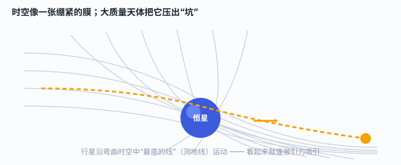

一、一个电梯里的灵感：加速 = 引力
狭义相对论只管“匀速”运动。爱因斯坦想更进一步：如果连加速、转弯、引力都算进来，会怎样？他的突破口是一个看似平常的观察——
你站在静止的电梯里，感到“被地面拉住”；可如果电梯在太空里以 9.8 m/s² 向上加速，你脚底的感觉和站在地球上一模一样。也就是说，在一个小范围内，“加速”和“引力”根本分不清。这就是等效原理，广义相对论的基石。
在足够小的范围内，引力场和加速参考系在物理上不可区分。正因如此，爱因斯坦可以把“引力问题”翻译成“加速度/几何问题”来处理。
二、核心答案：引力 = 时空弯曲
既然加速和引力等价，而加速的参考系里光会“拐弯”（想想向上加速的电梯里，水平射入的光看起来向下弯），那么真实引力场里，光也该拐弯。爱因斯坦顺着这条线推出一个惊天结论：
质量和能量会弯曲周围的时空。物体并不是被看不见的“引力”拉着走，而是顺着弯曲时空里自然的路径运动。引力，只是时空几何的另一种说法。

物体自由运动时走的“最直、最短”路径，在数学上叫测地线。在平坦时空里测地线是直线；在弯曲时空里，它看起来就是一条绕圈的轨道。牛顿看到的“椭圆轨道”，在爱因斯坦眼里是“弯曲时空里的一段直路”。
三、三个惊人预言，逐一被证实
广义相对论不是漂亮话，它给出了能当场检验的预言：
- 光线偏折（引力透镜）：光经过大质量天体旁边会被掰弯。1919 年日全食，爱丁顿的观测队测到星光掠过太阳边缘偏折约 1.75 角秒，与预言吻合。消息登上头版，爱因斯坦一夜成名。
- 引力红移：光从强引力处逃向弱引力处，会损失能量、频率变低、颜色偏红。后来在引力场中精确测到。
- 水星近日点进动：牛顿力学算不准的水星轨道微小偏移，用广义相对论一算正好对上——这是它最早“赢了牛顿”的地方。
四、更极端的世界：黑洞与引力波
把质量压得足够小，时空弯曲会剧烈到连光都逃不出——这就是黑洞。广义相对论在 1916 年还预言了引力波：两个黑洞合并这样的剧烈事件，会在时空上激起传播的“涟漪”。
这些曾被认为只存在于方程里的东西，如今已被直接看到：2015 年，LIGO 探测器捕捉到双黑洞合并的引力波；2019 年，事件视界望远镜拍下了黑洞的“照片”。爱因斯坦的想象，成了今天的观测事实。
五、晚年未竟的梦：统一场论
广义相对论成功后，爱因斯坦晚年迁居美国普林斯顿，试图把引力与电磁力写进同一个理论（统一场论）。他没能完成，但这份野心点醒了后世：今天物理学家仍在追求“大统一理论”。科学的边界，总是被下一个“还想再统一一点”的人推远。
一句话记住：引力不是“拉”，是“时空弯了”；物体只是顺着弯了的路，自然地走。